Vanderbilt · Working Smarter · facilitator guide · print edition
Working Smarter, the facilitator guide

Run of show
| Page | Time |
|---|---|
| Welcome | Full 5 min · Core 4 |
| The belief | Full 2 min · Core 1 |
| The Chancellor’s charge | Full 3 min · Core 0 |
| How Working Smarter works | Full 3 min · Core 2 |
| Learn | Full 13 min · Core 10 |
| Readiness | Full 10 min · Core 6 |
| CRIT | Full 9 min · Core 8 |
| Practice | Full 13 min · Core 10 |
| Tools | Full 6 min · Core 4 |
| Simulator | Full 7 min · Core 0 |
| Responsible AI | Full 8 min · Core 6 |
| Knowledge check | Full 6 min · Core 4 |
| Summary | Full 2 min · Core 1 |
| Next step | Full 4 min · Core 3 |
| Resources | Full 1 min · Core 0 |
| Wrap-up | Full 1 min · Core 1 |
| Total | Full 93 min · Core 60 min |
01 · A week before · Learn the course by taking it
- Read this guide end to end, then run both editions and do every exercise yourself: the learner classroom edition (where the QR sends the room) and this one.
- Build your own readiness plan in the course with a real task from your week. You will reference having done it when the room builds theirs.
- Book a room where people can use their own devices, and confirm the guest wifi actually works.
- Decide now: Full (93) or Core (60), and mark which group debriefs you keep. Every rail card names its Core cut.
- Rehearse the next-word demo and one CRIT build out loud, start to finish.
- Send the pre-work invite with the calendar invite; the rail on this page has the text, ready to copy.
02 · The day before · Test everything a learner touches
- Test the projector with this facilitator link and confirm the script rail is readable from where you will stand.
- Scan the welcome QR from the back of the room with your own phone. It must land on the learner classroom edition, not this page.
- Print a few one-page takeaways for anyone who arrives without a device: the Download your summary button prints a clean sheet, and empty fields become write-in lines.
- Re-read the tough-questions bank below and say each answer out loud once.
03 · 30 minutes before · Set the stage, then yourself
- Welcome page up on the projector as people arrive, QR showing.
- Close every other tab and silence the machine; a notification reads clearly from the back row.
- Test the arrow keys, and run one prompt in the next-word demo so the first interaction is proven.
- Write PARKING LOT on the whiteboard.
- Set the tone for yourself: you are not here as the AI expert, you are the person who runs the reps.
04 · Materials · What the session needs
- Projector with this facilitator link open; this edition is the projection copy, and the rail is yours alone.
- Facilitator laptop with a clicker, notifications off.
- Learner devices, joining through the welcome QR on the next page.
- A few printed one-page takeaways for anyone without a device.
- Whiteboard or flip chart, for the parking lot and the Tools section hand votes.
Pre-work invite (copy and paste)
Subject: Working Smarter on [day]: bring one real task Hi everyone, Looking forward to our Working Smarter session on [day, time, room]. It is hands-on from the first minute, so three small things before you arrive: 1. Bring a device you can work on comfortably (laptop or phone, charged). You will join the course by scanning a QR code in the room; guest wifi is available. 2. Come holding one real task from your week that is repetitive or text-heavy: a recurring email, a summary, a report. Every exercise uses it. 3. If you have never signed in to ChatGPT EDU with your Vanderbilt account, try it once before we meet. Nothing to read in advance. Nothing you do in the session is graded or reported, and nothing you type leaves your browser. See you there, [your name]
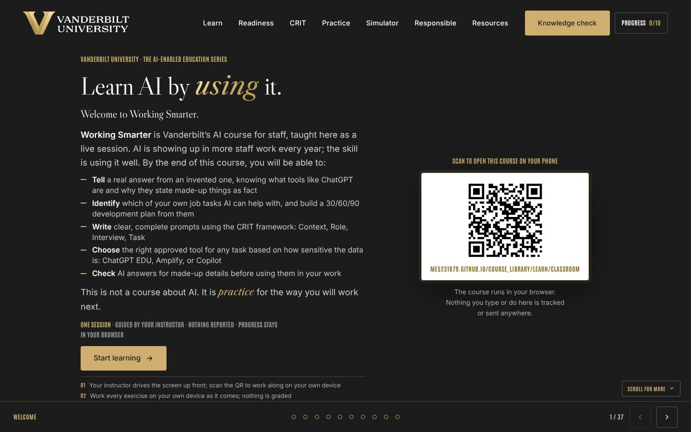
Welcome Full 5 min · Core 4
Gets every phone onto the course and sets the tone: hands-on, nothing graded, nothing reported.
Say
“Welcome. This is Working Smarter, and the whole idea fits in one line: you learn the new tools by using them. Grab your phone and scan the code on screen; the same course opens in your hand. Nothing you type today is stored or sent anywhere, and nobody sees a score.”
Do
- Project this page with the QR up until phones are out; ask for a thumbs-up when people see the welcome page on their own device.
- Walk the five outcomes, then ask for a show of hands: who already uses AI most weeks? Expect a third of the room; name that spread as normal.
- Hand a printed takeaway to anyone without a device and read the short URL under the QR aloud for anyone the camera fails.
Validate: 80%+ of phones show the learner welcome page before you turn the page.
Watch for: Guest wifi chokes on a room of phones. Read the URL aloud, pair the stranded with a neighbor, and keep moving.
Transition: “Before we touch a single tool, here is the one sentence this whole program stands on.”
Core path: Skip the show of hands; send the QR and read the outcomes in one pass.
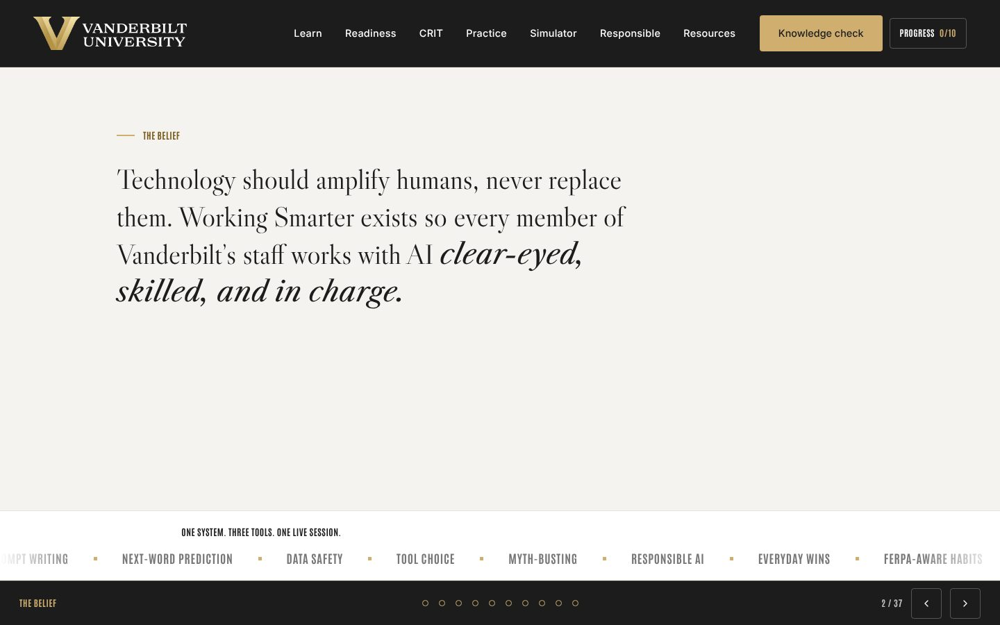
The belief Full 2 min · Core 1
Plants the program stance so every tool that follows lands as an amplifier, not a threat.
Say
“One sentence drives everything today: technology should amplify humans, never replace them. Every exercise you are about to do is practice at staying in charge.”
Do
- Read the creed from the screen, slowly, and let it sit for a beat.
- Invite one reaction, then move on; this page is a breath, not a discussion.
Validate: The room is quiet and looking at the screen, not at their phones.
Watch for: Someone challenges the line. Do not argue it here; say the readiness section takes on that exact fear, and keep the promise when you get there.
Transition: “Amplify, never replace, is our line. The next page is the university’s: why Vanderbilt wants every staff member working this way.”
Core path: Read the creed and turn the page; hold reactions for Readiness.
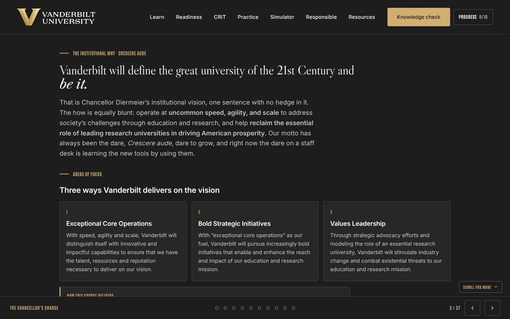
The Chancellor’s charge Full 3 min · Core 0
Ties the session to the Chancellor’s vision so learning the tools reads as the university’s strategy, not a tech fad.
Say
“One page on why the university cares before we touch a tool. Chancellor Diermeier’s vision has no hedge in it: Vanderbilt will define the great university of the 21st Century and be it. Doing that takes uncommon speed, agility, and scale, and some of that speed comes from desks like yours. Our motto is the dare, Crescere aude, dare to grow, and this session is the dare in practice.”
Do
- Read the vision sentence from the screen once, at full weight; do not paraphrase it.
- Walk the three focus cards and land each At your desk line: CRIT prompts speeding up core operations, banked hours fueling bolder bets, and safe routing as the model others copy.
- Point at the flywheel card and ask where one person’s work touches it; take a single answer and move on.
Validate: Nobody asks "why is the university pushing this" later in the session; this page already answered it.
Watch for: Eyes glaze at mission language. Stay concrete: the At your desk lines are about their actual tasks, so point back at those, not at the vision sentence.
Transition: “So how do we spend our time together? Four stops. Here is the map.”
Core path: Under a minute: read the vision sentence, gesture at the three focus cards, and move on.
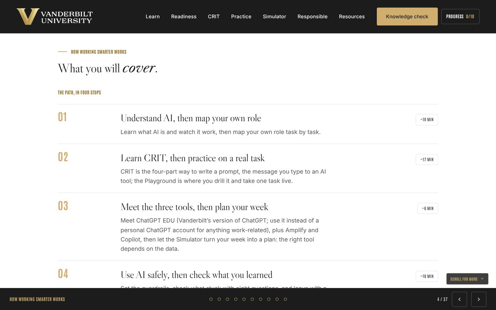
How Working Smarter works Full 3 min · Core 2
Shows the map and the pace so the room trusts you with the clock.
Say
“Four stops today: understand the tools, map your own role, learn to write a good prompt, and set the guardrails. Every stop is hands-on. If we run short on time, I trim modules, not stops.”
Do
- Point at each stop and its time chip so people can pace themselves.
- Name your path out loud, the full session or the shorter core, so the room knows what is kept.
- Point at PARKING LOT on the whiteboard: off-topic questions go there and get answered at the wrap-up.
Validate: No logistics questions come up when you turn the page.
Watch for: Early tool-specific questions. Park them by name on the whiteboard so people see the parking lot works.
Transition: “First stop: what these tools actually are, in five plain words.”
Core path: One pass of the four stops; skip the pacing talk.
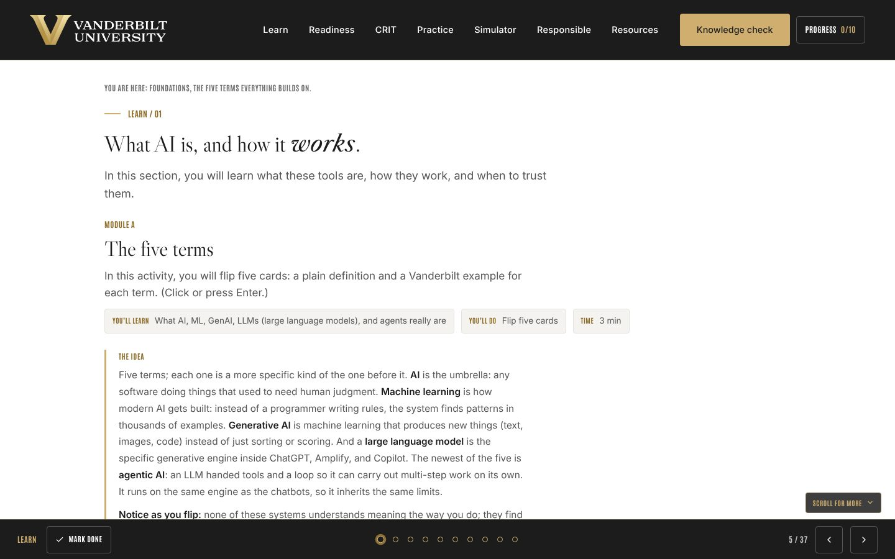
Learn Full 13 min · Core 10
Installs the one mental model everything else uses: the machine predicts, it does not know.
Say
“Five terms, and each one is a more specific kind of the one before it. Flip the cards on your own device as I go. If you keep one fact from this whole session, keep this: the model predicts the likeliest next word. It does not understand meaning, and that is why it needs checking.”
Do
- Project the five cards and walk them while the room flips along on their phones.
- Run the next-word demo on the projector yourself: one shuffle, then push temperature both ways, the run you rehearsed.
- Send the room to their devices for the Together card, then debrief with one question: did anyone see a long-shot word win at high temperature? Expect at least one yes; that yes is the whole lesson.
- Give the hallucination drill three quiet minutes, then ask who caught all four planted errors.
Validate: In the debrief, at least one learner says "it predicts the next word" unprompted.
Watch for: The demo eats time as people play. Give a hard two-minute call and name the 3Blue1Brown video and the myths page as reading for the week.
Transition: “Now you know what the machine is. Next we point it at your actual job.”
Core path: Keep the demo and the hallucination drill; drop the myths debrief and all video mentions.
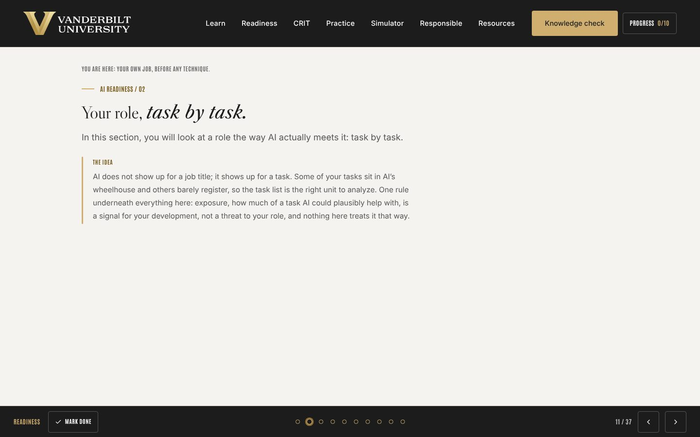
Readiness Full 10 min · Core 6
Turns "will AI take my job" into a task list and a 30/60/90 plan each person owns.
Say
“AI meets a role task by task, not job title by job title, so we work from your real week. Exposure is a development signal, not a threat. Nothing you type here leaves your browser, and this is not an HR exercise.”
Do
- Walk the four ideas quickly; the evidence cards hold the numbers if anyone asks.
- Give six quiet minutes for the assessment; the report builds itself once the fields are in.
- Mention the plan you built with your own real task when you prepped, and name the focus task you picked.
- Run the Together card: partners swap their chosen focus task and the bucket it landed in.
Validate: When you ask who has a focus task picked, most hands go up.
Watch for: People stall trying to list their whole job. Point at your own example and say version one only has to be honest, not complete.
Transition: “You have named the tasks. CRIT is how you get the machine to actually do them well.”
Core path: Cut the partner swap, give four quiet minutes instead of six, and finish the report as homework.
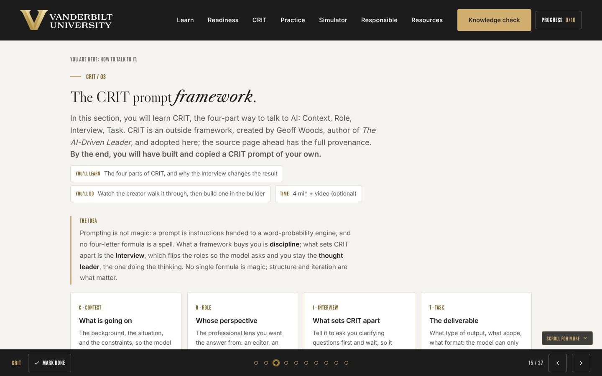
CRIT Full 9 min · Core 8
Installs the CRIT habit, with the Interview step as the part nobody arrives knowing.
Say
“CRIT stands for Context, Role, Interview, Task, and it comes from Geoff Woods. The Interview line is the part nobody guesses: you make the model ask you questions before it writes. The gaps surface early, and you stay the one doing the thinking.”
Do
- Walk the four cards; linger on Interview, the one with the gold border.
- Run the Together explain-back before the builder; if pairs stall on Interview, reread that card with the whole room.
- In the builder, have everyone tap an example chip first so the shape is visible, then build the CRIT prompt you rehearsed out loud.
Validate: Explain-back partners can name all four letters without looking at the screen.
Watch for: The Woods video tempts you as a time-filler. Skip it on the clock; two minutes of it only earns its place if the room is flagging.
Transition: “Enough theory. Hands on keyboards; the next few pages are a gym.”
Core path: Skip the video and run the explain-back as one whole-room call-out instead of pairs.
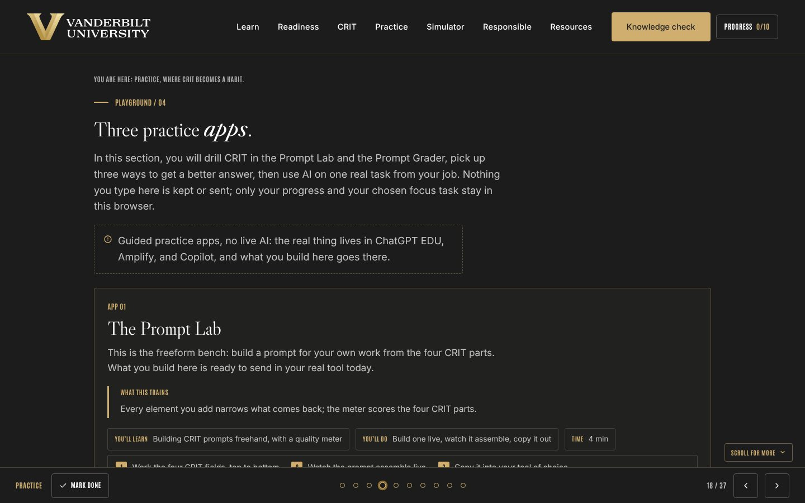
Practice Full 13 min · Core 10
Moves CRIT from idea to muscle and takes one real prompt into a live tool.
Say
“These are practice apps, not live AI: what you build here gets pasted into the real tools, so build it like you mean it. The meter and the grader give instant feedback. Chase the A; it proves you can do this, not just remember it.”
Do
- Run the Together card: pairs build one Lab prompt for a real task one of them has this week.
- Collect two or three prompts and run the strongest live in ChatGPT EDU on the projector; react honestly to what comes back.
- Point early finishers at the Grader: paste, grade, tighten, repeat.
- Protect ten minutes for Take it live; it is the heart of the session.
Validate: At least one pair reaches 4 of 4 CRIT on the Lab meter.
Watch for: The live run comes back mediocre. Improve the prompt with the room in real time; a visible rescue teaches more than a lucky first answer.
Transition: “That was one tool. There are three, and choosing between them is a data question.”
Core path: One volunteer prompt instead of pair work, one live run, and the Grader becomes homework.
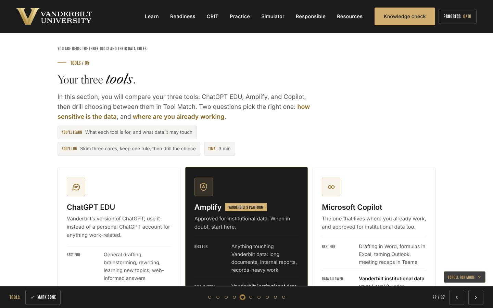
Tools Full 6 min · Core 4
Makes tool choice automatic: route by data sensitivity, default to Amplify when unsure.
Say
“Two questions route every task: how sensitive is the data, and where are you already working. ChatGPT EDU for everyday non-sensitive work; Amplify or Copilot when it is internal. And when in doubt, Amplify. That one habit prevents the mistakes that are hardest to undo.”
Do
- Skim the three tool cards; do not read them out.
- Say the rule strip twice; it is the takeaway.
- Run the Together vote: read a scenario, rows vote by hand, then everyone runs Tool Match on their own device to see if the room beat the drill.
Validate: On the hand vote, most of the room routes the sensitive scenario away from ChatGPT EDU.
Watch for: The personal-ChatGPT question. Answer it straight: no Vanderbilt agreement covers that account, so work data is unprotected there.
Transition: “Tools chosen. Now aim them: the Simulator turns one of your tasks into a plan.”
Core path: Cut the hand vote; run Tool Match individually and still say the rule twice.
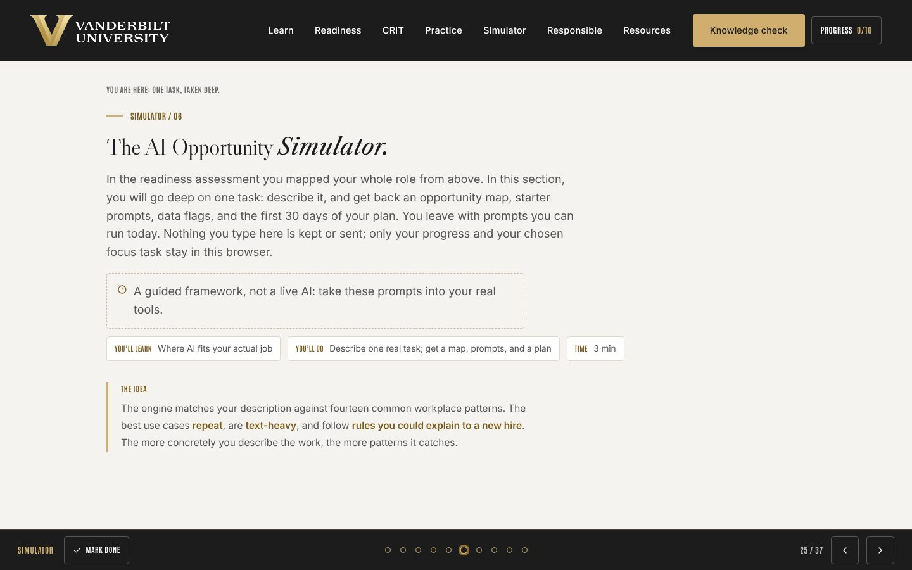
Simulator Full 7 min · Core 0
Shows each person a concrete first month with AI, built from their own task.
Say
“Describe one real task in plain words, like you would to a new colleague. The more concrete you are, the more patterns it catches. You leave this page holding starter prompts and the first thirty days of a plan.”
Do
- Point at the example chips for anyone stuck; the Acorn example shows the safe-data habit in action.
- Give a quiet run first, then the Together card: neighbors compare maps and name one overlap out loud.
- Remind people to copy their starter prompts out; they land in the summary PDF later.
Validate: Most screens show a generated opportunity map before the debrief.
Watch for: Vague inputs make thin maps. Read the room’s most concrete example aloud so people hear the difference.
Transition: “Everyone is holding a plan. Before anyone runs one, we set the guardrails.”
Core path: Skip the whole section; name it as this week’s homework, run at your desk with your focus task.
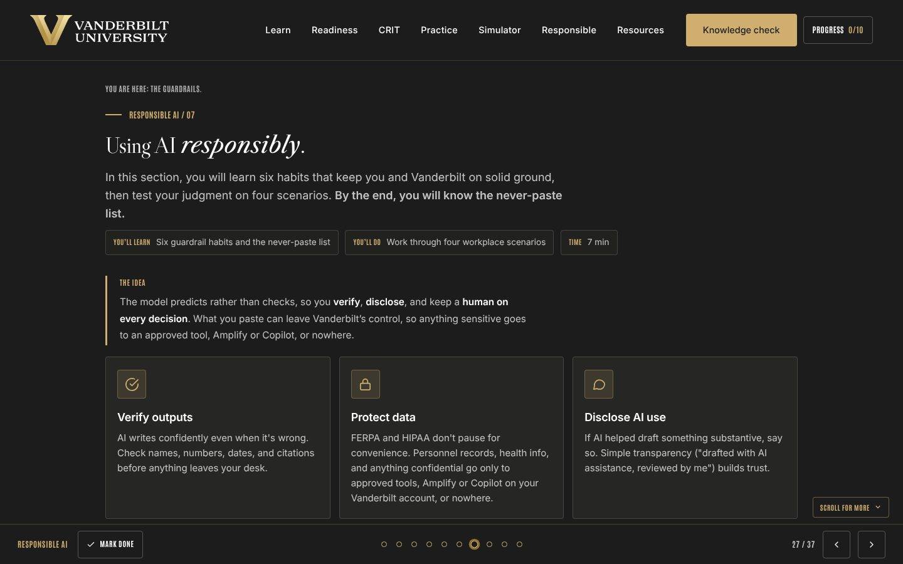
Responsible AI Full 8 min · Core 6
Sets the hard edges with the never-paste list, then trains the judgment calls around them.
Say
“The model predicts; it does not check. So you verify, you disclose, and a human makes every decision about people. The never-paste list is the hard edge. Everything around it is judgment, and that is exactly what these scenarios train.”
Do
- Read the never-paste list aloud; it is the one slide worth being solemn about.
- Run the Together card: each table takes one scenario and argues it before tapping an answer.
- Have one table report the case that split them; resolve it with the takeaway line on the card.
Validate: Tables argue before they tap; answers appearing in seconds mean nobody debated.
Watch for: Running long. Keep the time works as homework; say so and move on rather than rushing the scenarios.
Transition: “Guardrails set. Eight questions to see what stuck, and nobody sees your score.”
Core path: Two scenarios instead of four, argued as one room instead of tables.
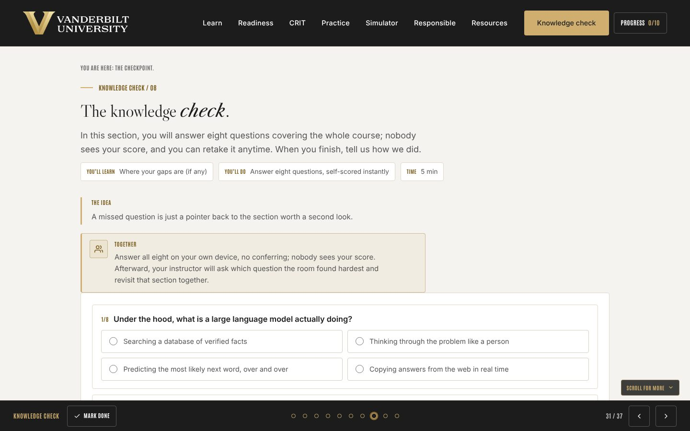
Knowledge check Full 6 min · Core 4
Lets each person find their own gaps while you find the room’s.
Say
“Eight questions, your own device, no conferring, and nobody sees your score. A missed question is a pointer, not a grade. When you finish, the feedback form appears; two taps and a send, and it genuinely shapes the next version.”
Do
- Give quiet time and watch for heads to come up.
- Ask which question felt hardest; expect the salary-summary one, and revisit that section for two minutes.
- Nudge the feedback form while devices are still out.
Validate: Most of the room reports a score, and you can name the hardest question.
Watch for: The salary-summary question catches rooms out. Be ready to restate the rule: internal data goes to Amplify or Copilot, never ChatGPT EDU.
Transition: “Scores in hand. One page pulls the whole day together before the handoff.”
Core path: Skip the group revisit; name the hardest section and point at it for the week.
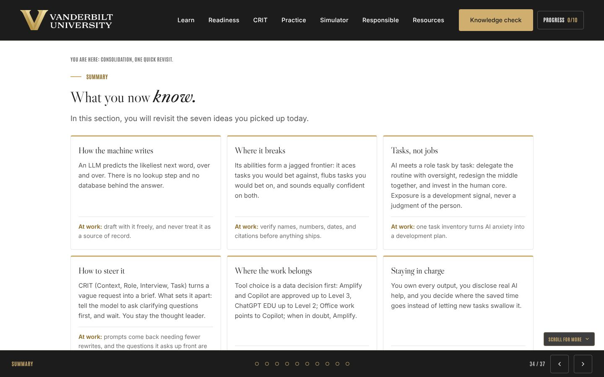
Summary Full 2 min · Core 1
Compresses the day to seven ideas and gets them saved before the room stands up.
Say
“Seven ideas, one screen. If one looks fuzzy, that is your section to revisit this week. The download button builds a PDF from what you typed today: your plan, your prompts, your boundary.”
Do
- Walk the seven cards in under a minute; they are recall, not new content.
- Give a quiet minute for everyone to download or print their summary before you turn the page.
Validate: You see save dialogs and downloads happening around the room.
Watch for: People skip the download and lose their typed work when the browser resets. Say plainly: this page is the only copy.
Transition: “That is what you know. The last real page is what you do with it this week.”
Core path: Skip the walkthrough; download only.
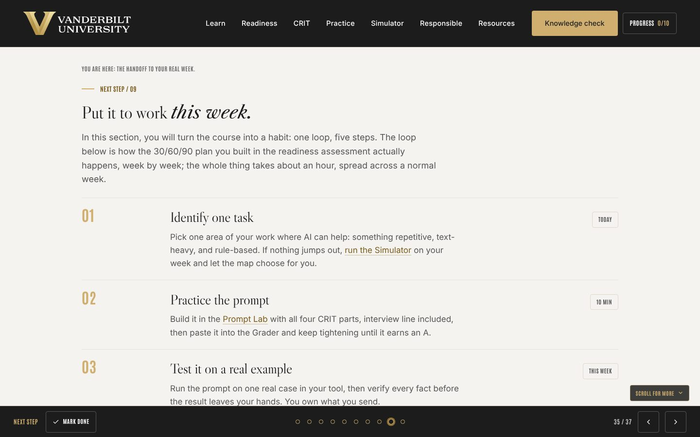
Next step Full 4 min · Core 3
Converts the session into one named task on one named day, plus an attested training record.
Say
“The course ends here, and the habit starts this week: one task, one prompt, one real run. And attesting in Oracle Learning is what puts today on your training record; this page cannot do it for you.”
Do
- Walk the five-step loop quickly; steps two and three are literally what the room just practiced.
- Run the Together card: partners name their task and the day they will run it. Listen for named days, not intentions.
- Show where the Oracle Learning button is, and give thirty silent seconds to attest right there.
Validate: You hear actual days ("Thursday") during the pair share.
Watch for: People plan to attest later and forget. The thirty silent seconds while devices are out is the recovery.
Transition: “Last stop, and it is a shelf, not a lecture: where to keep learning.”
Core path: Keep the pair share, it is the point of the session; trim the loop walk to one sentence per step.
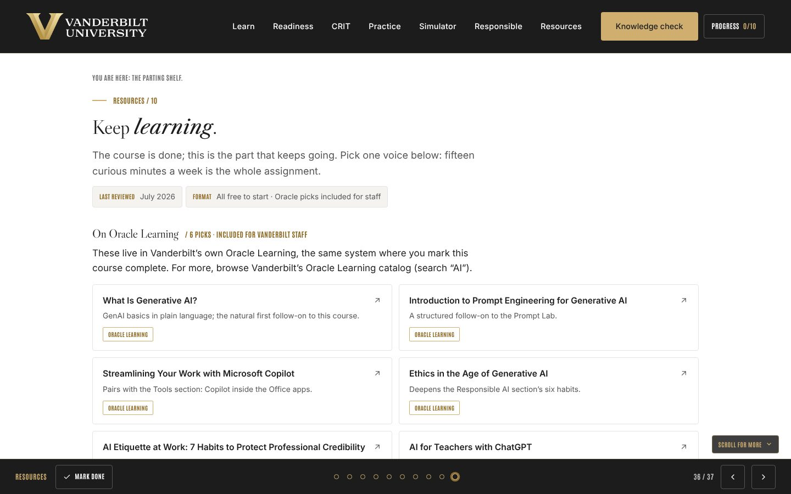
Resources Full 1 min · Core 0
Leaves a shelf without homework guilt: one pick, fifteen minutes a week.
Say
“Nobody needs all of this. Pick one voice and give it fifteen curious minutes a week; that is the whole assignment.”
Do
- Scroll the shelf slowly, once.
- Call out One Useful Thing and the Oracle Learning picks as the easy starts.
Validate: Heads follow the scroll instead of packing bags.
Watch for: Reading the list item by item kills the closing energy. One scroll, two callouts, done.
Transition: “That is the whole course. One last page.”
Core path: Skip the section; point at it in one sentence from the wrap-up page.
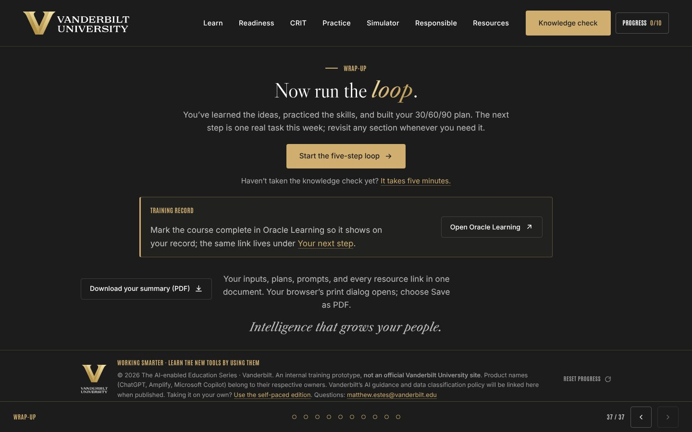
Wrap-up Full 1 min · Core 1
Sends the room out on the action and resets the stage for the next session.
Say
“Run the loop once this week and today pays for itself. Thank you for the energy you brought to this room.”
Do
- Leave the Oracle Learning link on screen while people pack up.
- Stay near the front; the best questions arrive after the formal close.
- After the room clears, use Reset progress in the footer so the next session starts clean.
Validate: The parking lot is empty, or every item on it has an owner and an answer route.
Watch for: Forgetting the footer reset; the next room would open on your marks and your focus task.
Transition: “End of session.”
Core path: Same close on both paths.
Generated from the facilitator edition's page scripts and the learner edition on screen. The on-screen facilitator edition lives at ./ alongside this guide.